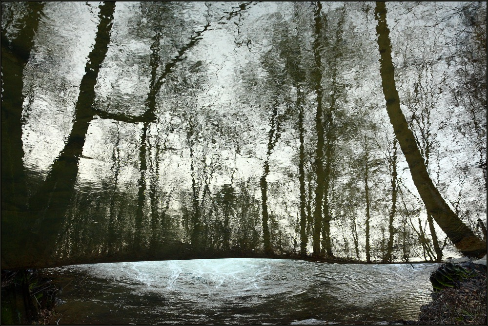

Nadpis
Podnadpis
Podnadpis třetí úrovně
Dnes je 2.4.2021
Dnes je 2.4.2021
Profesní rekvalifikace poskytuje kvalifikaci pro novou profesi, například zedník, tesař, zámečník, instalatér, prodavač, ošetřovatelka, účetní, sekretářka, správce výpočetní sítě, programátor. V dělnických profesích poskytují kurzy obvykle kvalifikaci na úrovni zaučení. Doplňková rekvalifikace doplňuje, rozšiřuje kvalifikaci pro určitou profesi. Například svářečský průkaz pro uchazeče kvalifikované v kovoprofesích, odborná způsobilost podle vyhlášky č. 50/1978 Sb. pro uchazeče kvalifikované v elektroprofesích, vazačský průkaz, lešenářský průkaz jako doplněk stavebních profesí, řidičský průkaz nezbytný pro výkon různých zaměstnání, znalost obsluhy osobního počítače pro technickohospodářské profese.
Profesní rekvalifikace poskytuje kvalifikaci pro novou profesi, například zedník, tesař, zámečník, instalatér, prodavač, ošetřovatelka, účetní, sekretářka, správce výpočetní sítě, programátor. V dělnických profesích poskytují kurzy obvykle kvalifikaci na úrovni zaučení. Doplňková rekvalifikace doplňuje, rozšiřuje kvalifikaci pro určitou profesi. Například svářečský průkaz pro uchazeče kvalifikované v kovoprofesích, odborná způsobilost podle vyhlášky č. 50/1978 Sb. pro uchazeče kvalifikované v elektroprofesích, vazačský průkaz, lešenářský průkaz jako doplněk stavebních profesí, řidičský průkaz nezbytný pro výkon různých zaměstnání, znalost obsluhy osobního počítače pro technickohospodářské profese.
Profesní rekvalifikace poskytuje kvalifikaci pro novou profesi, například zedník, tesař, zámečník, instalatér, prodavač, ošetřovatelka, účetní, sekretářka, správce výpočetní sítě, programátor. V dělnických profesích poskytují kurzy obvykle kvalifikaci na úrovni zaučení. Doplňková rekvalifikace doplňuje, rozšiřuje kvalifikaci pro určitou profesi. Například svářečský průkaz pro uchazeče kvalifikované v kovoprofesích, odborná způsobilost podle vyhlášky č. 50/1978 Sb. pro uchazeče kvalifikované v elektroprofesích, vazačský průkaz, lešenářský průkaz jako doplněk stavebních profesí, řidičský průkaz nezbytný pro výkon různých zaměstnání, znalost obsluhy osobního počítače pro technickohospodářské profese.
Profesní rekvalifikace poskytuje kvalifikaci pro novou profesi, například zedník, tesař, zámečník, instalatér, prodavač, ošetřovatelka, účetní, sekretářka, správce výpočetní sítě, programátor. V dělnických profesích poskytují kurzy Kontakt obvykle kvalifikaci na úrovni zaučení. Doplňková rekvalifikace doplňuje, rozšiřuje kvalifikaci pro určitou profesi. Například svářečský průkaz pro uchazeče kvalifikované v kovoprofesích, odborná způsobilost podle vyhlášky č. 50/1978 Sb. pro uchazeče kvalifikované v elektroprofesích, vazačský průkaz, lešenářský průkaz jako doplněk stavebních profesí, řidičský průkaz nezbytný pro výkon různých zaměstnání, znalost obsluhy osobního počítače pro technickohospodářské profese.
Profesní rekvalifikace poskytuje kvalifikaci pro novou profesi, například zedník, tesař, zámečník, instalatér, prodavač, ošetřovatelka, účetní, sekretářka, správce výpočetní sítě, programátor. V dělnických profesích poskytují kurzy obvykle kvalifikaci na úrovni zaučení. Doplňková rekvalifikace doplňuje, rozšiřuje kvalifikaci pro určitou profesi. Například svářečský průkaz pro uchazeče kvalifikované v kovoprofesích, odborná způsobilost podle vyhlášky č. 50/1978 Sb. pro uchazeče kvalifikované v elektroprofesích, vazačský průkaz, lešenářský průkaz jako doplněk stavebních profesí, řidičský průkaz nezbytný pro výkon různých zaměstnání, znalost obsluhy osobního počítače pro technickohospodářské profese.
Profesní rekvalifikace poskytuje kvalifikaci pro novou profesi, například zedník, tesař, zámečník, instalatér, prodavač, ošetřovatelka, účetní, sekretářka, správce výpočetní sítě, programátor. V dělnických profesích poskytují kurzy obvykle kvalifikaci na úrovni zaučení. Doplňková rekvalifikace doplňuje, rozšiřuje kvalifikaci pro určitou profesi. Například svářečský průkaz pro uchazeče kvalifikované v kovoprofesích, odborná způsobilost podle vyhlášky č. 50/1978 Sb. pro uchazeče kvalifikované v elektroprofesích, vazačský průkaz, lešenářský průkaz jako doplněk stavebních profesí, řidičský průkaz nezbytný pro výkon různých zaměstnání, znalost obsluhy osobního počítače pro technickohospodářské profese.
Podnadpis
Text
kurziva
zdůrazněno
Text
- aaaaaaaaaaaaaaaaaaaaaaaaaaaaaaaaaaaaaaaaaaaa
- bbbbbbbbbbbbbbbbbbbbbbbbbbbbbbbbbbbbbbbbbbbb
- cccccccccccccccccccccccccccccccccccccccccccc
- dddddddddddddddddddddddddddddddddddddddddddd
- eeeeeeeeeeeeeeeeeeeeeeeeeeeeeeeeeeeeeeeeeeee
- aa
- bb
- cc
- dd
- ee
DuckDuckGo
bhasbhasbcbc ahbchabhsa havbCiabvh ah s habchaBSHABS Hb
Formulář
Blabla balab autor